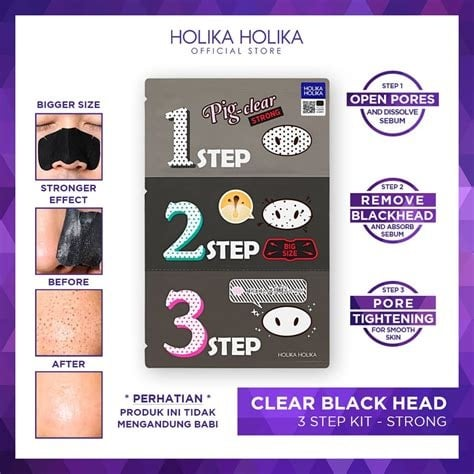
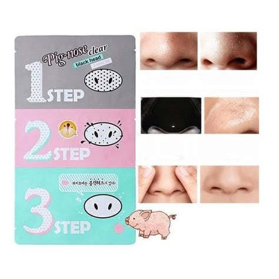
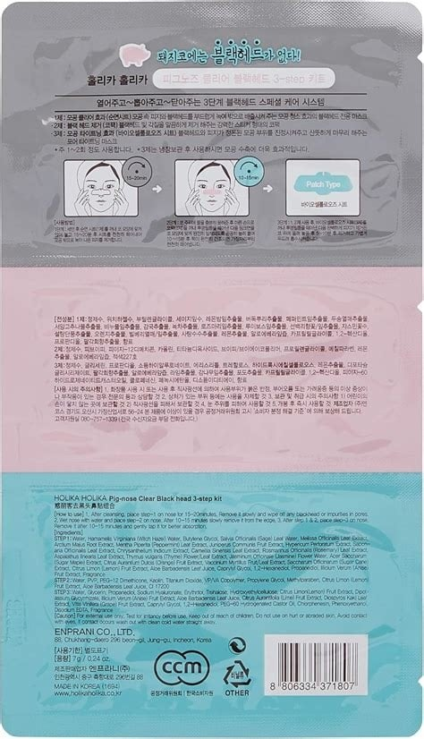

<div> <table style="border-collapse: collapse; width: 99.9251%;" border="1"><colgroup><col style="width: 50%;"><col style="width: 50%;"></colgroup> <tbody> <tr> <td> <div><span style="font-size: 14pt;"><strong>Holika Holika kit de curatare pori si de indepartare puncte negre, 7g</strong></span></div> <div><span style="font-size: 14pt;">Designul anatomic al plasturelui din kitul Holika Holika asigură o aderență perfectă pe &icirc;ntreaga zonă a nasului, acoperind eficient porii dilatați. Această etapă esențială acționează direct asupra punctelor negre și a sebumului acumulat, extrăg&acirc;nd impuritățile &icirc;n profunzime pentru a lăsa pielea curată, uniformă și complet purificată.</span></div> </td> <td><span style="font-size: 14pt;"></span></td> </tr> <tr> <td><span style="font-size: 14pt;"></span></td> <td><span style="font-size: 14pt;">Primul plasture deschide porii si permite eliminarea punctelor negre cu o mai mare usurinta, al doilea plasture elimina punctele negre si impuritatile, iar al treilea plasture minimizeaza porii.</span></td> </tr> <tr> <td><span style="font-size: 14pt;">O privire detaliată asupra instrucțiunilor complete de utilizare, lista de ingrediente și ilustrațiile explicative pentru fiecare pas. Acest ghid clar asigură aplicarea corectă a tratamentului acasă, garant&acirc;nd rezultate maxime &icirc;n curățarea și minimizarea porilor din zona nasului.</span></td> <td></td> </tr> </tbody> </table> </div>